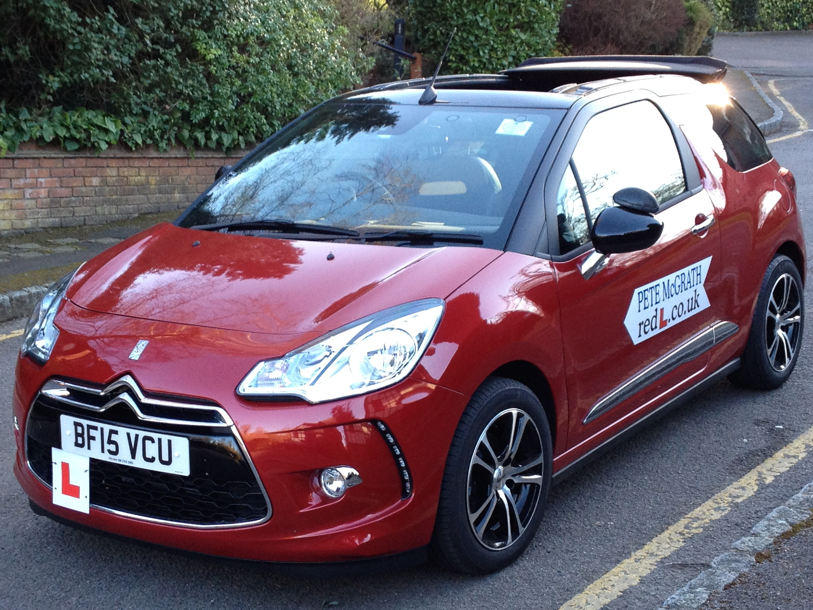

Red-L Driving School
Red-L Driving School gives quality driving lessons in Bromley, Beckenham, Hayes, West Wickham, Petts Wood and Orpington.
Note: New CGI hazard perceptions clips have been in use for the Theory Test since 12th January 2015 - See the Red-L Facebook page for an example and please 'like' the page while you're there!
I am a local independent driving instructor in Bromley with many years of experience, and am a top grade 6.
All instructors are retested periodically by the Driver and Vehicle Standards Agency and given a grade from 1 (lowest) to 6 (highest). Grades 1 to 3 are substandard.
Currently in the UK, 52% of instructors are grade 4, 31% grade 5, and only 6% are awarded a grade 6. I have held a grade 6 for the majority of the time I have been teaching. Consequently, I have a very high test pass rate.
My teaching style is professional but informal, meaning learning to drive with me will be an enjoyable experience! A new grading system was introduced in April 2014, with the new grades being either 'A', 'B' or fail (sadly making the grading more generalised). In the first three months the national results are 24% of instructors receiving a grade A, 57% grade B and 19% failing resulting in further training and a retest. I am a grade A.
My aim is to provide my pupils with:
- Professional, patient and structured manual driving lessons
- One to one driving instruction, tailored to your individual needs with collection from your home, work, or school, arranged at your convenience
- Enjoyable, fun and informative lessons with an emphasis on pupils striving to become confident, safe and alert drivers
- Relaxed and safe lessons in a clean, tidy and fully maintained new dual controlled car, fitted with all the latest safetly features
- Free access to online theory and hazard training to help guide you through exam preparation (click here for the theory test section of my website)
- Lessons planned to a syllabus to maximise learning time. I use the new iPad as a teaching aid to promote understanding of the subject covered, at a pace suitable for each student
- A growing collection of videos I have created for student support on YouTube (click here to visit my channel)
- Additional 'Pass Plus' lessons following your driving test pass, providing invaluable experience on more advanced roads such as motorways and country roads
- Reassuring, refresher lessons for nervous post pass pupils taking up driving again after a period of time and tailored to individual needs
I pride myself in offering a polite and well respected service to the community, backed up by the many testimonials of former pupils. View them on the Testimonials page.
